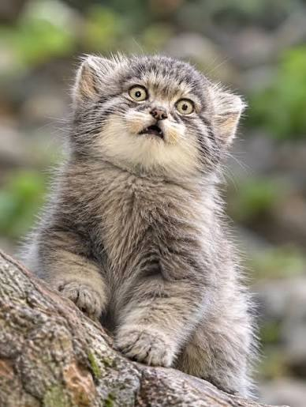
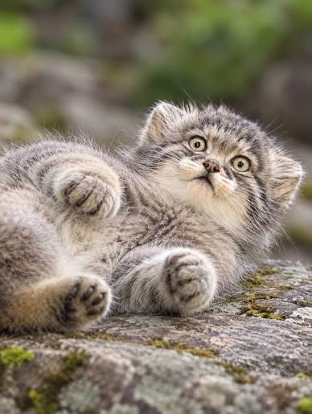

These cats are masters of high-altitude survival, ranging across the montane grasslands and shrubland steppes of Central Asia.
They are found in a variety of habitats, from alpine meadows to rocky outcrops.
While their distribution is vast—extending from the Caspian Sea and Iran through southeastern Siberia, Mongolia, and Tibet—their population is naturally fragmented.
They are habitat specialists, preferring rocky areas, ravines, and slopes that offer hiding cover from predators.
They are generally found at mid-mountain elevations, though they have been recorded as high as 5,593 meters in the Himalayas.
Because they are not fast runners, they rely on existing cavities for daily survival, making their homes in abandoned marmot burrows, rock crevices, or small caves.
The Pallas cat is a specialized hunter, with pikas making up more than 50% of its diet.
This preference for pikas is an energy-saving strategy, as these lagomorphs are larger and more nutrient-dense than other small rodents.
When pikas are scarce, they will consume voles, gerbils, birds, and even insects.
They utilize an "ambush and wait" hunting style, often lingering outside of burrows or using their paws to "fish" for prey in shallow holes.
Primarily crepuscular (active at dawn and dusk), they spend much of their day hidden in dens.
Interestingly, despite their small size, they maintain unusually large home ranges—males have been known to patrol areas exceeding 100 square kilometers.
Just look at it! 😊
